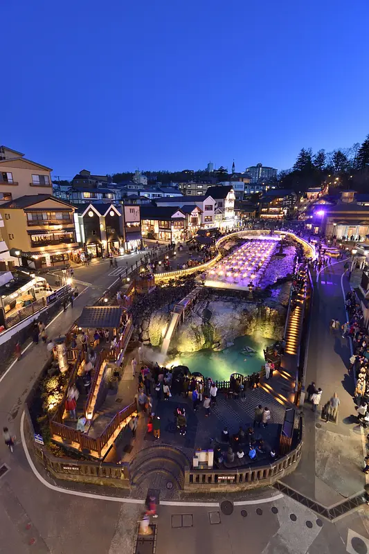
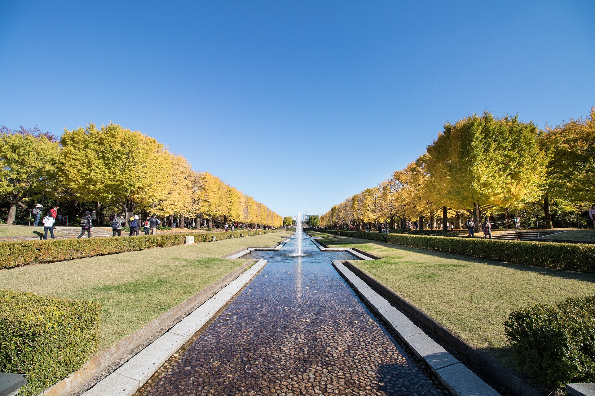
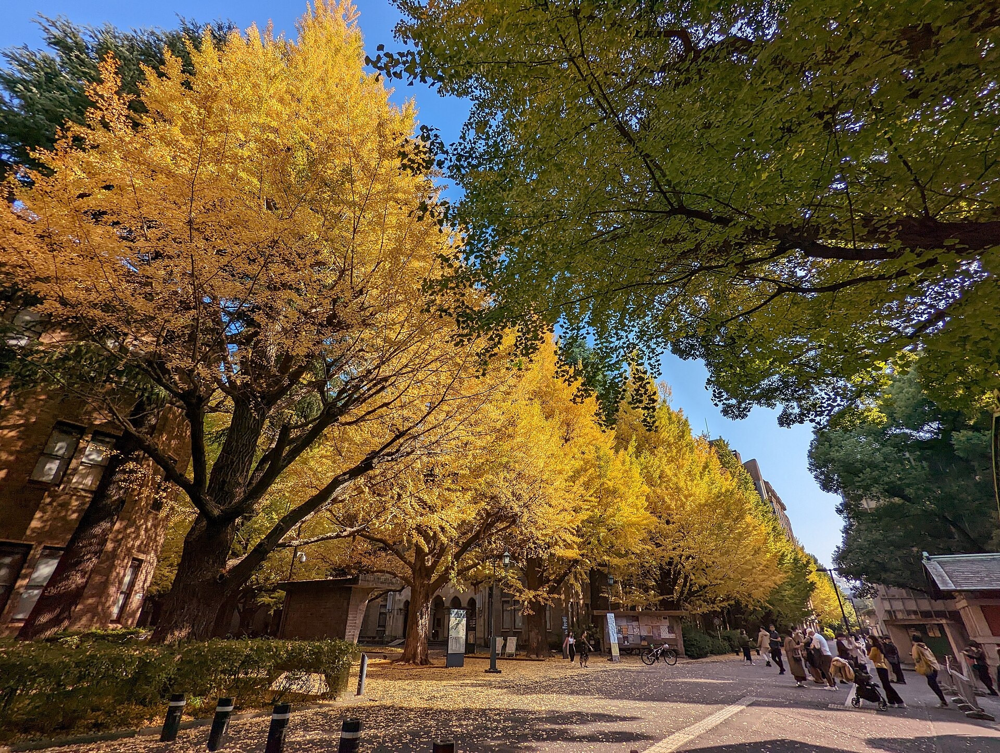
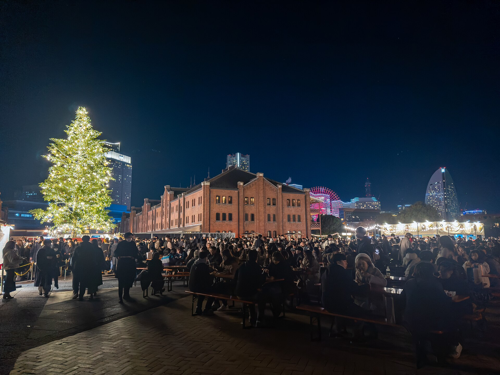
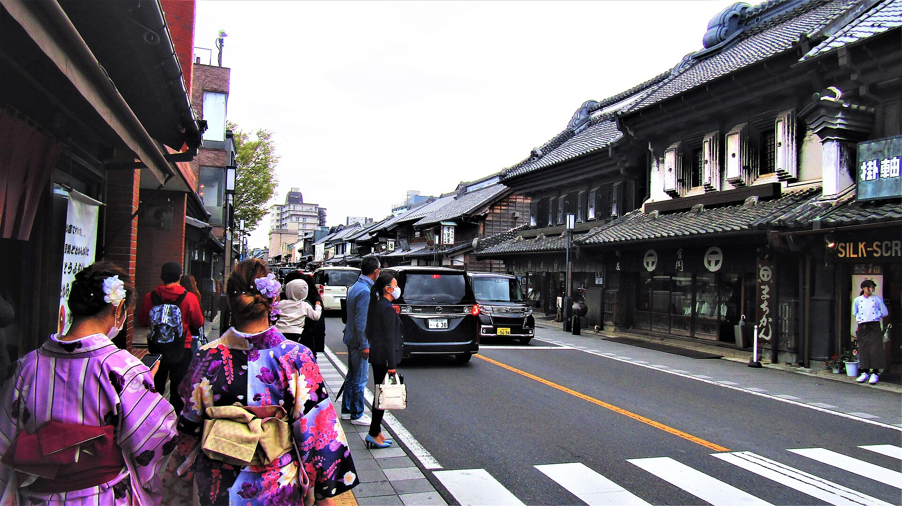
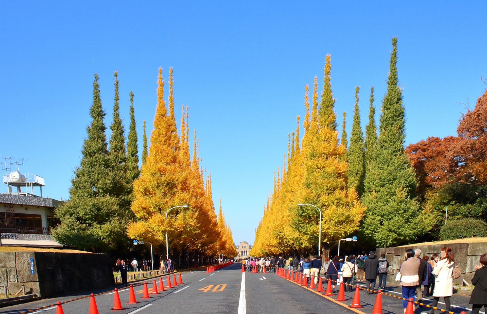

01 · SLOW DOWN
草津住一晚
不是路過泡湯。保留旅館晚餐、夜晚湯畑、朝湯與早餐。

七天走過東京、草津、川越與橫濱：在溫泉慢下來、為秋葉等一道好光，最後在港邊迎接聖誕夜。
草津溫泉、東京秋葉與橫濱聖誕夜，串起七天的節奏。每一段移動，都為下一個值得停留的畫面留出餘裕。

不是路過泡湯。保留旅館晚餐、夜晚湯畑、朝湯與早餐。

東京大學、昭和紀念公園與神宮外苑，各自有不同的城市秋色。

與親戚相聚後走進港區，讓紅磚、市集與海邊夜景自然接續。
前兩天收東京秋色，中段去草津放慢，後段以川越與橫濱收尾。點日期可直接查看當天。
先看摘要就夠了。只有需要查時間時，才展開詳細安排。
成田進城、入住鶯谷。晚餐與散步都留在上野、阿美橫一帶，舒服適應東京的第一晚。
上午拍東京大學銀杏，午後專心留在昭和紀念公園，從日光一路拍到藍調與夜間點燈。
只帶小行李上山。下午在露天風呂與揉湯表演之間二選一，晚上把時間留給旅館與湯畑。
享受旅館早晨後，搭中午前後的直達特急回上野。下午休息、整理照片，再到附近輕鬆散步。

Kawagoe · the old street is the reason上午完整感受喜多院、藏造老街與午餐。午後回東京拍神宮外苑黃昏；同區市集若如期舉辦再順遊。
白天與親戚相聚，傍晚沿汽車道走向紅磚倉庫，把市集、港景與晚餐留在同一個區域。

Ueno · a gentle last day最後一天不跑遠。上野公園、午餐與採買擇一兩項，提早抵成田處理 2026 年 11 月上路的新退稅流程。
先完成影響最大的四項；其餘交通、票券、裝備與備案都整理在下方資訊中心，需要時再展開。
預訂時程、行李、保暖與突發狀況都保留在這裡；平常收合，查資料時才展開，不干擾閱讀行程。